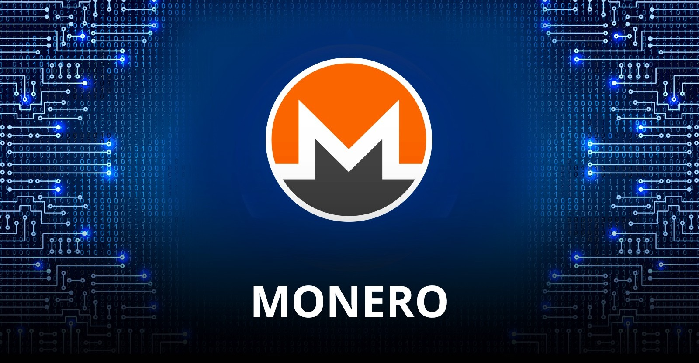
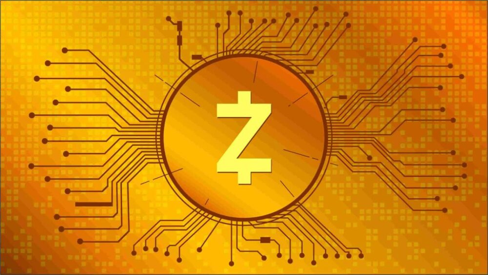

Privacidad
Es Bitcoin realmente privado?
Muchos piensan que Bitcoin es privado y anónimo pero no es lo para nada debido a lo siguiente:
1. La blockchain: Todas las transacciones de Bitcoin quedan registradas para siempre en un historial público y descentralizado.
Cualquiera puede ver el historial completo de movimientos de una dirección, cuánto dinero tiene y hacia dónde se transfiere.
La gente no puede saber quién eres pero pueden ver tu dirección.
2. Bitcoin es seudónimo, no anónimo: Las cuentas no están registradas a nombre de una persona,
sino a través de direcciones (como una clave pública o un monedero). Sin embargo, si en algún momento vinculas esa dirección
con tu identidad del mundo real,por ejemplo, al comprar bitcoins en un exchange centralizado que te pida verificación de
identidad o al dar tus datos para recibir un envío de algún producto a tu casa, cualquier persona o gobierno
con herramientas de análisis de blockchain podrá rastrear tu historial financiero completo y, si sabe investigar bien, puede descubrir
quién eres tú.
Para lograr privacidad en Bitcoin se deben aplicar técnicas avanzadas y buenas prácticas (como
el uso de múltiples monederos independientes, evitar utilizar la misma dirección o enrutar conexiones mediante
herramientas como Tor), pero por defecto deja un rastro digital permanente y público.
Monero y Zcash
Monero (XMR) y Zcash (ZEC) son las dos criptomonedas centradas en la privacidad más populares del mercado pero tienen notables
diferencias.
Monero (XMR)
Monero se diseñó bajo la premisa de que la privacidad debe ser obligatoria para todos los usuarios. En su red
no existen transacciones públicas ni saldos visibles. Te pongo sus tecnologías clave:
- Stealth Addresses (direcciones de sigilo): Generan una dirección única y aleatoria de un solo uso para cada transacción.
En la Bitcoin, tú tienes solo 1 dirección.
- Ring Signatures (Fórmulas de anillo): Monero mezcla la firma del remitente real con señuelos sacados del historial de la red,
de modo que es matemáticamente imposible determinar quién inició el pago.
- RingCT (Ring Confidential Transactions): Oculta la cantidad exacta de dinero que se envió.
- Minería descentralizada: Utiliza un algoritmo llamado RandomX, diseñado para ejecutarse
en CPU convencionales en lugar de potentes hardware ASIC

Ventaja: Es totalmente privado.
Desventaja: A los gobiernos y otras organizaciones les da miedo que sea totalmente anónima por lo que ha sido retirada de muchos exchanges regulados ya que se puede usar en lavados de dinero y otros crimenes.
Zcash (ZEC)
Fue creado por científicos del MIT, Johns Hopkins y otras instituciones. Introduce matemáticas avanzadas para dar la opción de hacer transacciones privadas.
- Privacidad opcional: A difencia de Monero donde la privacidad es obligatoria, en ZEC puedes elegir enviar transacciones transparentes (visibles como las de Bitcoin) o blindadas.
- Su criptografía llamada Zero-Knowledge es considerada una joyita matemática xd. El nivel de anonimato en una transacción blindada entre dos direcciones ocultas es teóricamente perfecto.

Ventaja: Dado que la privacidad es opcional, la mayoría de los usuarios deciden interactuar de forma transparente y sin anonimato por lo que es aceptado en más tiendas y no es tan evitada por organizaciones como Monero.
Desventaja: Precisamente debido a que la mayoría de los usuarios interactúan mediante direcciones transparentes. Esto reduce el grupo de anonimato (anonymity set) y facilita la trazabilidad cuando se mezclan fondos entre direcciones públicas y privadas.
Ring signatures, stealth addresses y confidential transactions
Estas tres tecnologías son de Monero y fueron diseñadas para ocultar 3 cosas claves de
cualquier transacción financiera: quién recibe, quién envía y cuánto se envía.
Stealth Addresses (Oculta al quién recibe el dinero)
1. Le das tu dirección pública a la persona que te va a pagar.
2. Al iniciar el envío, el software del quien te envia el dinero usa criptografía de curva elíptica para generar automáticamente
una dirección única de un solo uso (one-time address) registrada en la blockchain.
3. Solo tu clave privada puede identificar y reclamar los fondos asociados a esa dirección única.
Resultado: Ningún observador externo puede vincular la transacción con tu dirección pública real, ni saber cuántas transacciones has recibido en total.
Ring Signatures (oculta al quien envia el dinero)
En Bitcoin, firmas digitalmente la transacción con tu clave privada para demostrar que posees los fondos, lo cual
conecta directamente tu identidad analítica con el origen del dinero.Las Ring Signatures (firmas de anillo) mezclan tu
firma con la de otros usuarios para crear una "malla de firmas".
1. Cuando envías dinero, el protocolo selecciona automáticamente entradas del historial de la
blockchain para usarlas como señuelos (decoys).
2. Tu transacción combina tu firma real con las claves públicas de esos señuelos en un solo "anillo".
3. La red valida criptográficamente que alguien del grupo autorizó la transacción y que los fondos son válidos,
pero matemáticamente es imposible determinar cuál de los miembros del anillo es el emisor real.
Resultado: Tu transacción queda oculta entre una multitud de posibles orígenes.
RingCT / Confidential Transactions (Ocultan el monto de dinero enviado)
Incluso si ocultas al emisor y al receptor, saber la cantidad enviada permite rastrear transacciones mediante patrones
numéricos (por ejemplo, rastrear un envío de un valor muy específico como 4.8193 XMR).
1. Utiliza un compromiso criptográfico denominado Pedersen Commitment.
2. Permite que los nodos de la red verifiquen matemáticamente la regla fundamental del sistema sin ver el número real:
Entradas = Salidas + Comisión.
3. Para evitar que un atacante envíe números negativos (creando dinero de la nada), incluye Pruebas de Rango (Bulletproofs),
que demuestran que el monto es mayor a cero sin revelar la cifra exacta.
Resultado: La cantidad transferida queda completamente secreta para todos, excepto para las partes involucradas en el pago.